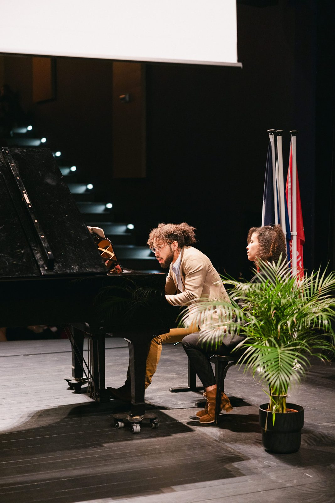
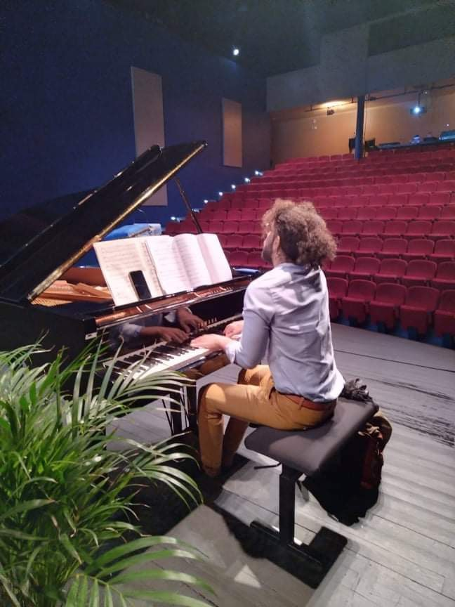
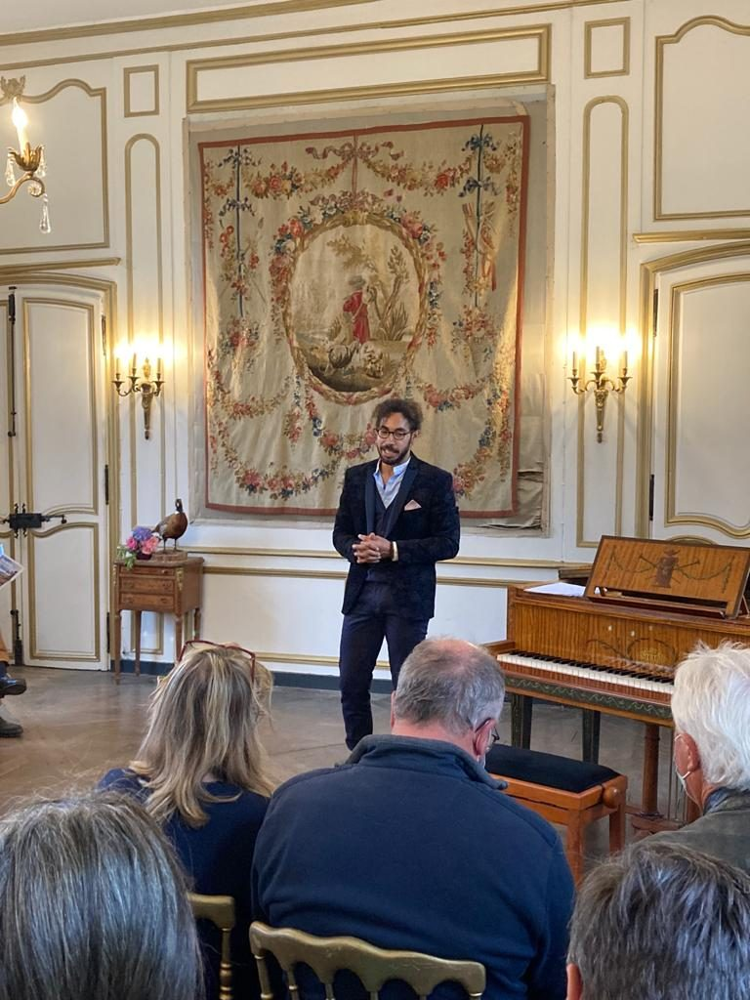

Charles Cabral
Pianiste, musicologue et professeur
Monsieur Croche, c’est le pseudonyme sous lequel Claude Debussy signait ses critiques musicales. Les Amis de Monsieur Croche, c’est une invitation à vivre la musique de près : l’écouter, la comprendre, la partager.
Pianiste et musicologue, auteur de livres publiés, j’enseigne le piano à Montpellier, dans le quartier de Port Marianne ou au domicile de mes élèves. J’aime transmettre autant que jouer : expliquer d’où vient une œuvre, ce qu’elle raconte, et aider chacun à trouver sa propre manière de la faire vivre.
Ce que je propose
- Cours de piano : tous âges, tous niveaux, tous répertoires, en individuel ou en petit groupe.
- Cours d’histoire de la musique : comprendre les œuvres, les compositeurs et leur époque.
- Salons musicaux : des concerts dînatoires chez moi, autour d’un piano de concert. Chaque programme est commenté, puis la soirée se prolonge autour d’un repas cuisiné par mes soins.
- Lectures musicales : des poèmes et des textes lus à voix haute, accompagnés de mes enregistrements au piano, comme Un renard sous les étoiles.
- Chorale (projet en préparation) : monter ensemble un choral de Bach, l’expliquer et le chanter avec des musiciens. Choristes et instrumentistes curieux, faites-vous connaître !
En concert



Pour un cours, un salon ou simplement une question : lesamisdemonsieurcroche@gmail.com